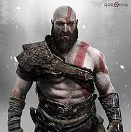

Cette exercice sert aussi de rappel. Au besoin, je peux le consulter.
Bonjour et bienvenue sur mon site !
En dessous, zone de teste et de modification des différentes balises utilisées dans le tutoriel.
Les différentes formes affichées ci-dessous utilise différente balise pour leurs donner différentes importances. Voici un mot, Voici un mot, Voici un mot
Cette partie donne l'exemple d'ajout de différente listes.
Voici les listes les plus utilisé :
Les puces
ceci est un mot
ceci est un autre mot
ceci est un autre-autre mot
Les numéroté
ceci est un mot
ceci est un autre mot
ceci est un autre-autre mot
Mettre une image
Cette partie donne l'exemple d'ajout d'une image sur la page web.
Il y a bien sûr l'image, mais en plus de cela, il est important d'y ajouter l'attribut "alt" qui définit ce qu'est l'image pour les moteur
de recherche, ou pour les personnes mal voyant ou aveugle.
Au delà de ça, il y à l'attribut "title" qui permet d'ajouter une infobulle lorsqu'on passe la souris sur l'image.

L'ancre
L'ancre fonctionne avec l'attribut "id".
L'ancre permet entre autre d'aller rapidement à une information en utilisant la balise href via le symbole dièse (#).
L'application de ce code est retrouvable au début de la page sous la forme du mini-sommaire.
Figure
Cette partie donne l'exemple d'ajout d'une figure.
La figure permet de mettre : images, codes sources,
citations, etc.
Le logiciel Bloc-Notes